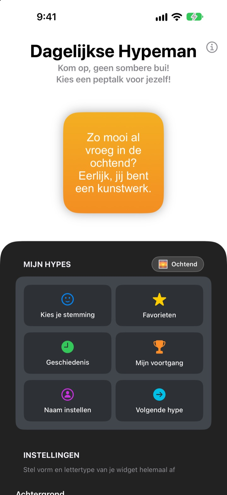
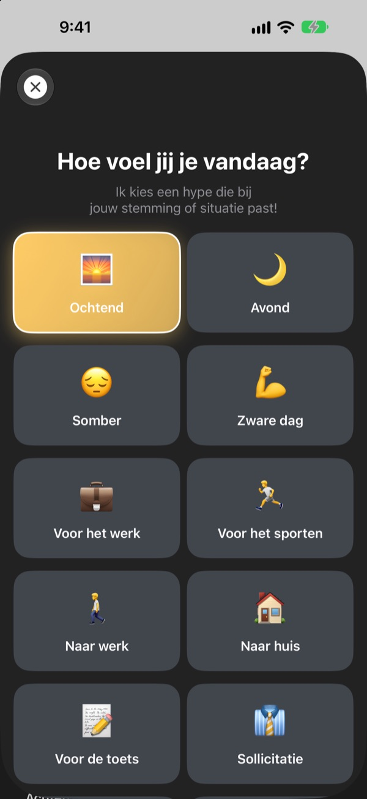
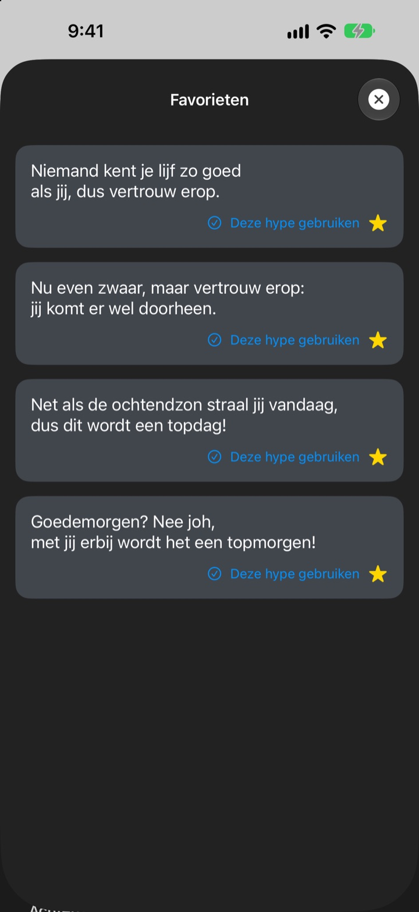
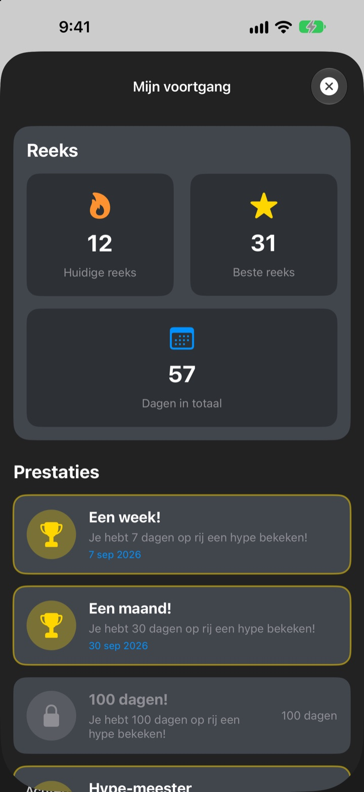

Elke keer dat je je telefoon pakt,
staat je grootste fan klaar
Dagelijkse Hypeman is een widget die je met opzet veel te veel complimenten geeft. 's Ochtends een ochtendhype, vlak voor de sollicitatie een sollicitatiehype. Lettertype, kleuren en achtergrond stel je zelf in.
Eén aankoop en alles is van jou. Geen abonnement, geen advertenties.

Krijg meteen een hype
Kies een stemming en de widget toont de hype die erbij past. Tik op Volgende hype voor een willekeurige uit alle 281.
Wie is je strengste criticus? Ben jij het zelf?
Op weg naar je werk, voor de sollicitatie, op weg naar huis: de stem in je hoofd moppert vooral. Dagelijkse Hypeman staat een paar keer per dag vanaf je beginscherm aan jouw kant, en net iets meer dan redelijk is. Zodra je moet grinniken, komt er een beetje zelfvertrouwen terug.
Een hype die bij je stemming past
Kies uit 14 stemmingen en situaties zoals Ochtend, Naar werk, Zware dag, Sollicitatie of Voor de date, en de passende hype verschijnt meteen op je widget. Twijfel je? Er is ook Willekeurig.

Bewaar je favorieten
Tik op de ster om een hype bij Favorieten te bewaren, en blader terug in Geschiedenis. Tik op Deze hype gebruiken en hij staat direct op je widget.

Kom elke dag langs en zie het oplopen
Elke dag dat je kijkt, verlengt je reeks. Bij 7, 30 of 100 dagen op rij, en bij 50 en 100 dagen in totaal, ontgrendel je een prestatie.

In drie stappen aan de slag
- 1
Kies je stemming
Open
Kies je stemmingen tik op wat nu past. - 2
Maak de widget van jou
Kies in Instellingen een lettertype, tekstkleur, achtergrond en hoe vaak hij ververst.
- 3
Zet hem op je beginscherm
Houd je beginscherm ingedrukt, tik op + en zoek Dagelijkse Hypeman.
Zo maak je de widget van jou
- Lettertype
- 13 opties, waaronder Futura, Georgia en Marker Felt
- Tekstkleur
- Elke kleur die je mooi vindt
- Achtergrond
- Een kleurverloop van twee kleuren of een van de meegeleverde foto's
- Uitlijning
- Links, midden of rechts
- Regelafstand
- Krapper of ruimer
- Verversen om de
- 5, 15 of 30 minuten een nieuwe hype
De grootte van de widget kies je als je hem aan je beginscherm toevoegt.
Eén keer kopen en klaar
De app
- 281 hypes voor 14 stemmingen
- Een beginschermwidget in jouw stijl
- Favorieten en Geschiedenis
- Reeksen en prestaties
Steun de maker
- Kies een kleine, middelgrote of grote fooi
- Er wordt niets mee ontgrendeld. Het is gewoon een bedankje
Alleen als en wanneer je zin hebt.
Geen abonnement, geen extra aankopen, geen advertenties.
Veelgestelde vragen
Hoe voeg ik de widget toe?
Houd een lege plek op je beginscherm ingedrukt tot de icoontjes wiebelen, tik bovenaan op +, zoek Dagelijkse Hypeman en kies een formaat.
Hoe wordt de volgende hype gekozen?
Kies je een stemming, dan staat er meteen een hype voor die stemming op je widget. Daarna toont de widget in het gekozen tempo een willekeurige uit alle 281. In de app kun je ook op Volgende hype tikken om zelf door te gaan.
Kan ik het lettertype of het verversen aanpassen?
Ja. In Instellingen pas je lettertype, tekstkleur, achtergrond, uitlijning, regelafstand en verversen aan: elke 5, 15 of 30 minuten.
De widget veranderde niet meteen.
iOS bepaalt wanneer widgets opnieuw getekend worden, dus soms loopt hij iets achter op het gekozen tempo. Open de app en sluit hem weer, dan werkt de widget zich bij.
Hoe werkt de reeks?
Elke dag op rij dat je een hype bekijkt, telt mee voor je reeks. Bij Mijn voortgang zie je je huidige reeks, je record, het totaal aantal dagen en je prestaties.
Mijn favorieten en geschiedenis zijn weg.
Alles staat alleen op je apparaat en gaat dus niet mee als je de app verwijdert of een andere telefoon neemt. Heb je niets verwijderd en is het toch weg, stuur ons dan een mail.
Worden mijn gegevens ergens heen gestuurd?
Nee. De app verzamelt geen persoonsgegevens. Je favorieten en geschiedenis blijven op je apparaat.
Hoe meld ik een fout of stel ik iets voor?
Rechtstreeks via Contact met de maker in de app, per mail of via een DM op Instagram aan @lee25_ios. We reageren zodra we het gezien hebben.
Vragen of ideeën? Mail naar leeo@kakao.com.